3. Les décisions prises par le Surveillant Général
4. Les élèves : consulter, inscrire, renvoyer, réintégrer
5. Notes, bulletins et cartes scolaires
6. Statistiques, classement et tableau d'honneur
7. Les attestations de présence effective au poste
8. Les paramètres
9. L'application mobile et questions fréquentes
Votre rôle. Vous consultez tout : élèves, classes, matières, enseignants, notes, statistiques. Vous gardez la main sur plusieurs choses :
les décisions du Surveillant Général, que vous pouvez désapprouver pendant 4 semaines ;
le renvoi d'un élève et sa réintégration, que vous seul pouvez faire ;
les attestations de présence effective au poste des personnels, que vous seul délivrez ;
la moyenne minimale du tableau d'honneur, que vous réglez avec le Surveillant Général ;
l'édition des bulletins, des listes, des cartes scolaires et des certificats du tableau d'honneur, comme le Surveillant Général.
L'application vous présente comme Directeur, ou Directrice si votre civilité est « Mme » ; les documents signés portent le même titre.
1. Se connecter et se repérer
Connectez-vous avec votre téléphone ou votre e-mail et votre mot de passe. L'œil à droite du champ affiche le mot de passe tapé ; « Rester connecté » garde la session sur l'appareil. Une session dure 12 heures.
Figure 1 — Écran de connexion
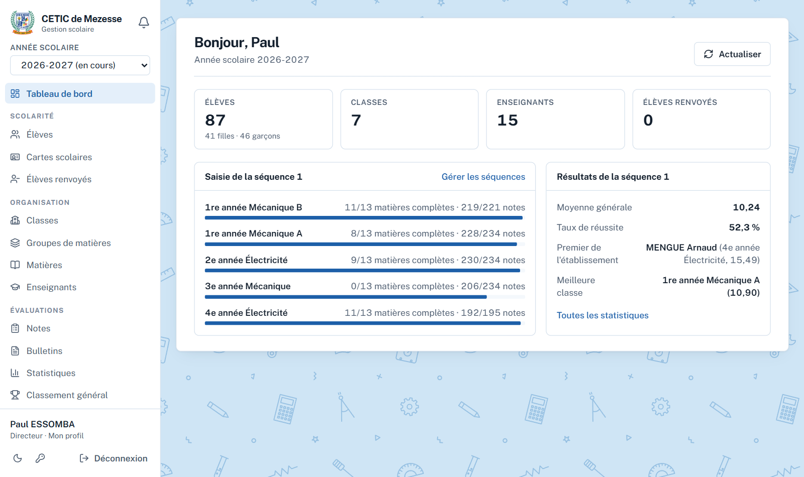
Figure 2 — Tableau de bord du Directeur
Le tableau de bord donne l'effectif, les classes, les enseignants, les élèves renvoyés, l'avancement de la saisie et les résultats de la dernière séquence.
Année scolaire, en haut du menu : l'année consultée.
Votre nom, en bas du menu : votre profil. Actualiser, en haut à droite de chaque page : recharge les données affichées.
2. Mon profil, ma civilité et mon mot de passe
Touchez votre nom en bas du menu pour corriger votre prénom, votre nom, votre téléphone ou votre e-mail. Changer de téléphone ou d'e-mail demande votre mot de passe, car ils servent à vous connecter.
Civilité. Choisissez « M. » ou « Mme » : elle décide du titre affiché et imprimé, « Le Directeur » ou « La Directrice », sur les attestations, les certificats du tableau d'honneur et les cartes scolaires. Vérifiez aussi que votre vrai nom est renseigné : il s'imprime sous la signature.
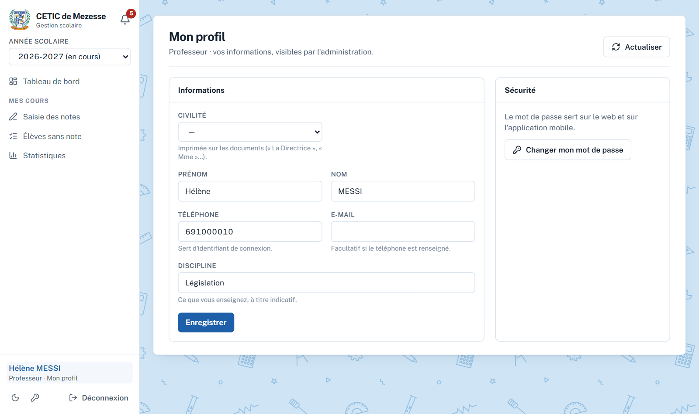
Figure 3 — Mon profil (ici, celui d'un professeur)
Changer mon mot de passe : le mot de passe actuel, puis le nouveau deux fois, 8 caractères au moins. Un message rouge signale si les deux ne correspondent pas.
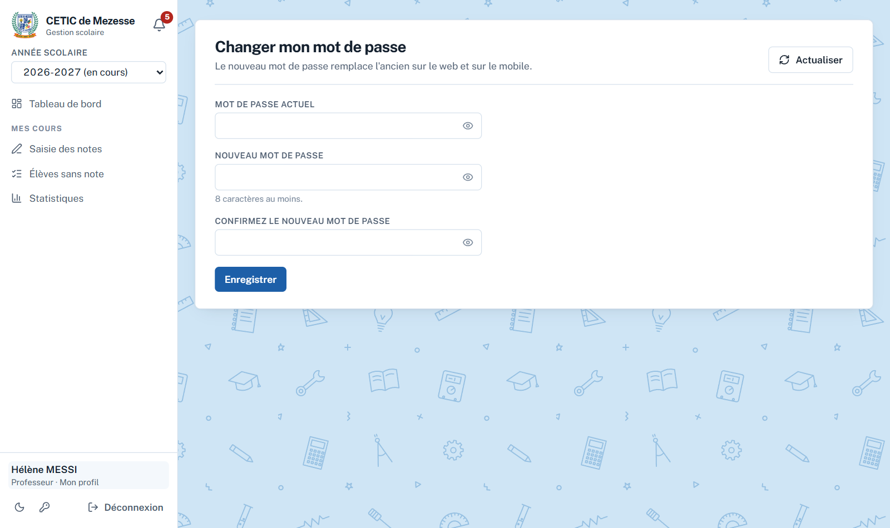
Figure 4 — Changer mon mot de passe
Votre compte ne peut être modifié par personne d'autre que vous : gardez votre mot de passe en lieu sûr.
3. Les décisions prises par le Surveillant Général
Menu Administration → Décisions prises. Chaque action du Surveillant Général sur l'organisation (classes, spécialités, groupes, matières, enseignants), la scolarité (inscriptions, fiches, photos, imports, réinscriptions) ou l'administration (années, séquences, établissement, barèmes) y est consignée. Elle est approuvée d'office.
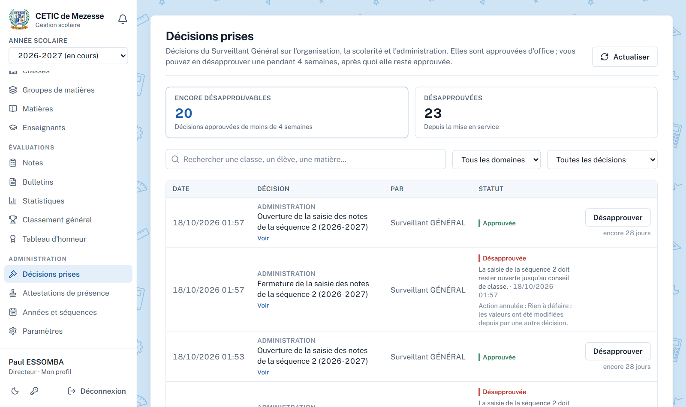
Figure 5 — Le journal des décisions
« Encore désapprouvables » compte les décisions de moins de 4 semaines ; « Désapprouvées », celles que vous avez désapprouvées.
Filtrez par domaine ou par statut, ou cherchez une classe, un élève, une matière. Voir ouvre la page concernée.
Sous le bouton Désapprouver, le délai restant ; au-delà de 4 semaines, la ligne indique « Délai écoulé ».
Désapprouver une décision
Cliquez Désapprouver. La fenêtre rappelle la décision et annonce ce qui va se passer, par exemple « La classe sera supprimée. ». Le motif est obligatoire.
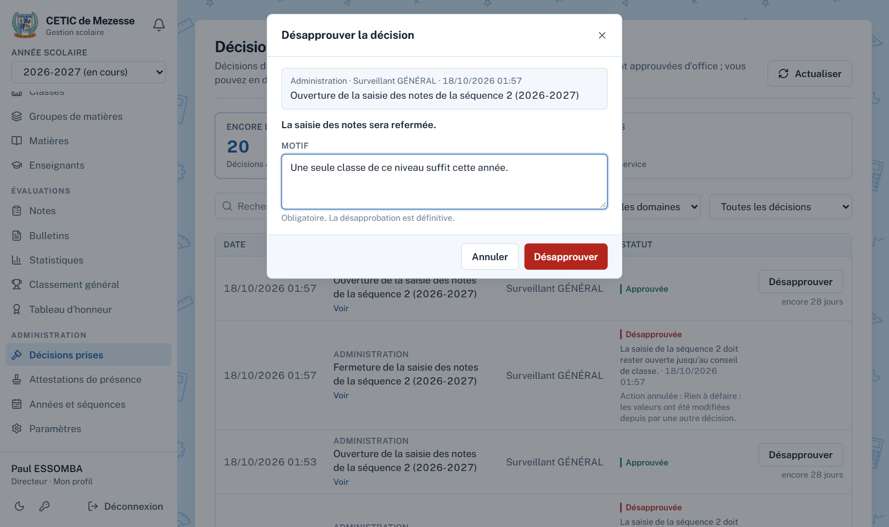
Figure 6 — Désapprouver : l'effet est annoncé avant de confirmer
L'action est défaite : ce qui a été créé est supprimé, ce qui a été modifié reprend ses valeurs précédentes, ce qui a été supprimé est recréé. Seuls les champs que la décision avait changés sont remis : une modification faite depuis n'est pas écrasée.
Le Surveillant Général est notifié, avec votre motif et ce qui a été défait.
La désapprobation est définitive.
Si l'action ne peut plus être défaite (par exemple, des élèves sont déjà inscrits dans la classe créée, ou des notes ont été saisies dans la matière créée), l'application refuse et explique pourquoi. La décision reste approuvée : il faut d'abord retirer ce qui bloque. Une matière recréée revient sans les notes effacées avec elle.
4. Les élèves : consulter, inscrire, renvoyer, réintégrer
Menu Scolarité → Élèves : la liste des élèves inscrits, par classe, avec une recherche par nom ou matricule, et les listes en PDF ou Excel. Vous pouvez inscrire des élèves (Ajouter des élèves : une ligne par élève, photo facultative, un seul Enregistrer) et ajouter leurs photos (bouton Photos) ; la modification d'une fiche revient au Surveillant Général.
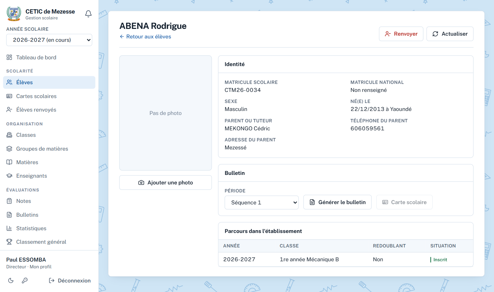
Figure 7 — Fiche de l'élève, avec le bouton Renvoyer
Renvoyer un élève
Sur sa fiche, cliquez Renvoyer, puis indiquez la date et le motif (obligatoires).
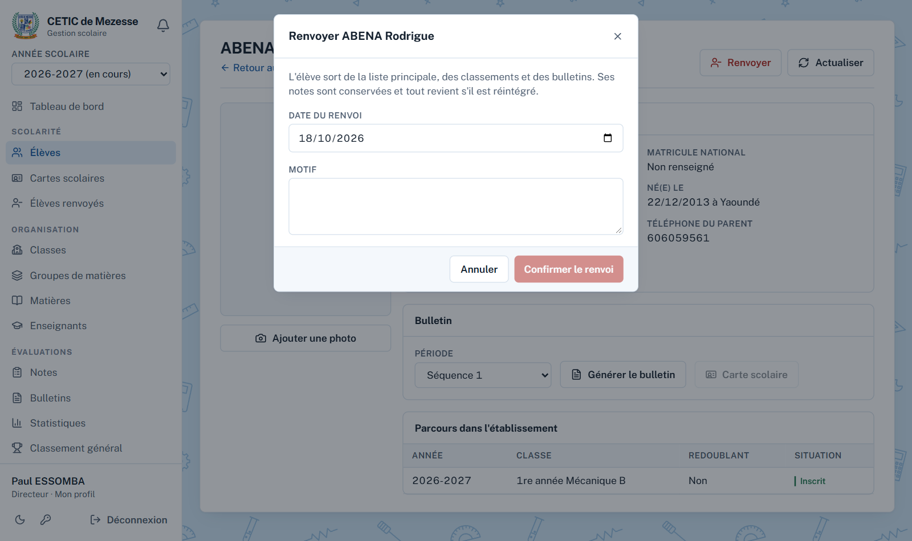
Figure 8 — Renvoyer un élève
L'élève renvoyé sort des listes, des calculs, des classements et des bulletins. Ses notes sont conservées. Un élève renvoyé une année peut être réinscrit l'année suivante.
Réintégrer un élève
Menu Scolarité → Élèves renvoyés : la liste des renvois de l'année, avec la date, le motif et qui a décidé. Réintégrer (ou le bouton de sa fiche) lui rend sa classe, ses notes et sa place dans les classements ; une observation est possible.
Figure 9 — Élèves renvoyés
5. Notes, bulletins et cartes scolaires
Menu Évaluations → Notes : le relevé d'une classe pour une période, avec moyennes et rangs, exportable en Excel. L'onglet Notes manquantes montre ce qui reste à saisir, et par quel professeur.
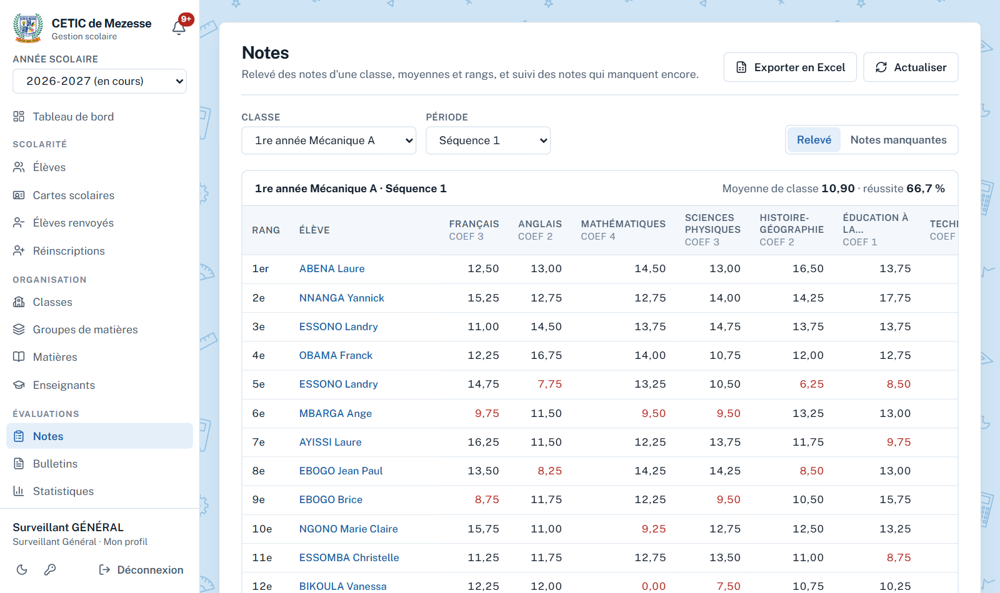
Figure 10 — Relevé des notes d'une classe
Bulletins : choisissez la période, puis des classes entières ou des élèves choisis. Un seul PDF, une page A4 bilingue par élève. Le bulletin d'un seul élève se génère aussi depuis sa fiche.
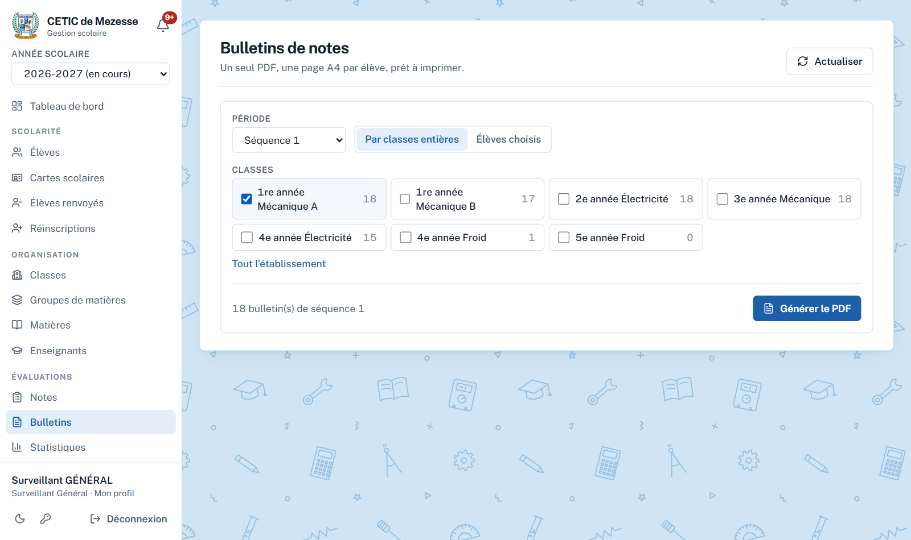
Figure 11 — Bulletins de notes
Cartes scolaires (menu Scolarité) : au format carte bancaire, dix par page A4, avec traits de coupe. La photo est obligatoire : les élèves sans photo sont listés et écartés.
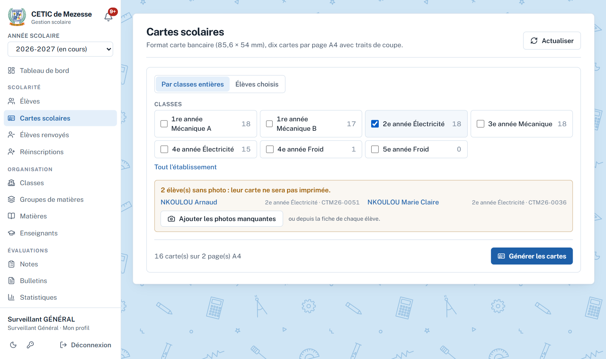
Figure 12 — Cartes scolaires
6. Statistiques, classement et tableau d'honneur
Menu Évaluations → Statistiques : pour une période, l'établissement, une classe ou une matière. Moyenne générale, taux de réussite, moyennes extrêmes, premier et dernier élève, meilleure et dernière classe, répartition des moyennes, comparaison filles–garçons.
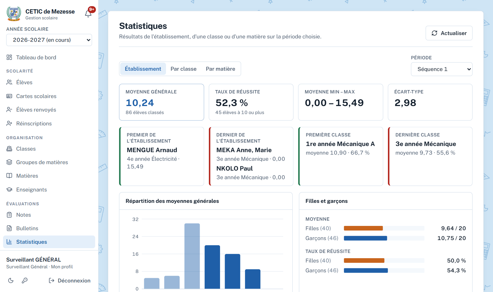
Figure 13 — Statistiques de l'établissement
Classement général : tous les élèves de l'établissement rangés ensemble. Des élèves ex æquo partagent le rang ; un élève réussit avec une moyenne de 10 ou plus.
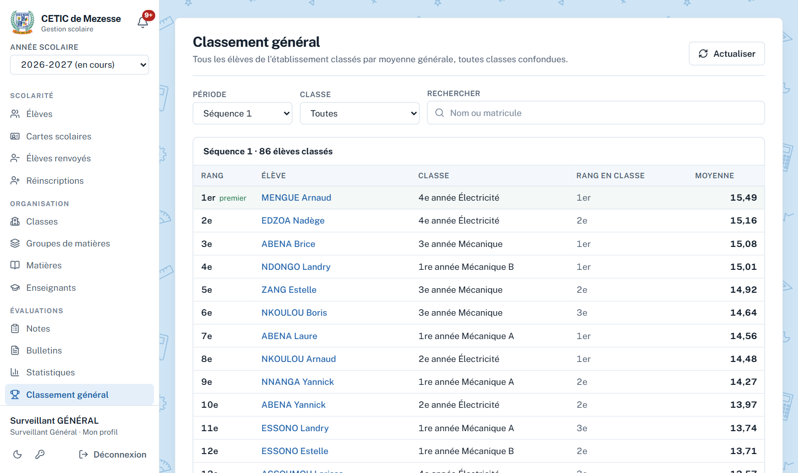
Figure 14 — Classement général
Tableau d'honneur
Menu Évaluations → Tableau d'honneur. Choisissez la période (une séquence, un trimestre ou l'année) et, si besoin, une classe. Les élèves dont la moyenne atteint la moyenne minimale (12,00 par défaut, voir le chapitre 8) apparaissent par classe, avec leur rang.
Figure 15 — Tableau d'honneur du premier trimestre
Liste PDF : la liste des élèves au tableau d'honneur, classe par classe, à afficher.
Certificats : un certificat bilingue par élève, deux par page A4, à découper. Il porte la moyenne, le rang et la moyenne de la classe, et deux signatures : le professeur principal de la classe et vous. Les dates du conseil de classe et de la remise restent à écrire à la main.
Le bulletin d'un élève au tableau d'honneur porte aussi la mention « TABLEAU D'HONNEUR / HONOUR ROLL ».
7. Les attestations de présence effective au poste
Menu Administration → Attestations de présence. Vous seul délivrez ces attestations aux personnels : enseignants et Surveillant Général. La page montre le registre : chaque attestation y garde son numéro, son bénéficiaire et sa date, et peut être réimprimée.
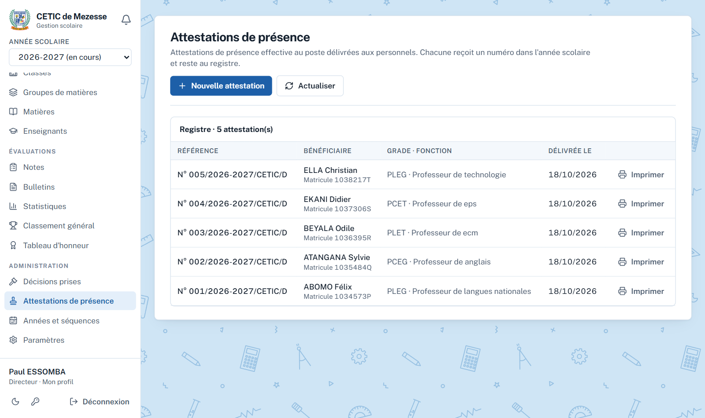
Figure 16 — Le registre des attestations
1
Cliquez Nouvelle attestation et choisissez le personnel.
2
Vérifiez ou complétez sa carrière : civilité, matricule de la fonction publique, grade, fonction, date de prise de service au CETIC. La date d'entrée dans la fonction publique et l'acte de nomination ou d'affectation sont facultatifs ; l'acte s'imprime s'il est renseigné.
3
Délivrer l'attestation : la carrière est enregistrée sur le compte, l'attestation reçoit le numéro suivant de l'année (par exemple N° 006/2026-2027/CETIC/D), puis Imprimer ouvre le PDF à signer.
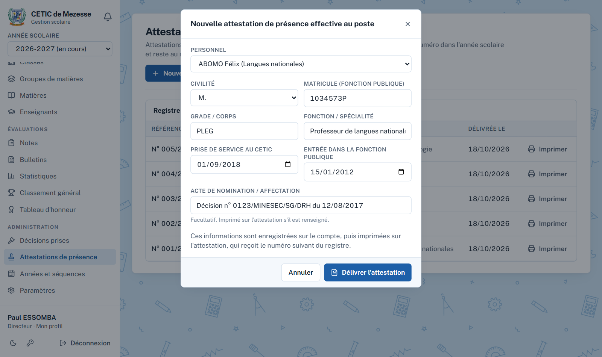
Figure 17 — Nouvelle attestation : la carrière du personnel
Le bouton reste grisé tant qu'il manque le matricule, le grade, la fonction ou la date de prise de service ; la fenêtre dit ce qui manque. L'attestation garde les informations du jour où elle a été délivrée : corriger la carrière ensuite ne la modifie pas, délivrez-en une nouvelle.
8. Les paramètres
Menu Administration → Paramètres. Vous y voyez ce qui s'imprime en tête des documents (noms français et anglais, sigles, région, département, arrondissement, localité, téléphone…) et les barèmes des grades et des cotes. Ces informations sont tenues par le Surveillant Général : pour vous, elles sont en lecture seule.
Seule la carte Tableau d'honneur vous est ouverte : la moyenne minimale à atteindre. Saisissez-la (par exemple 12 ou 12,50) puis Enregistrer ; le tableau d'honneur et les bulletins en tiennent compte aussitôt.
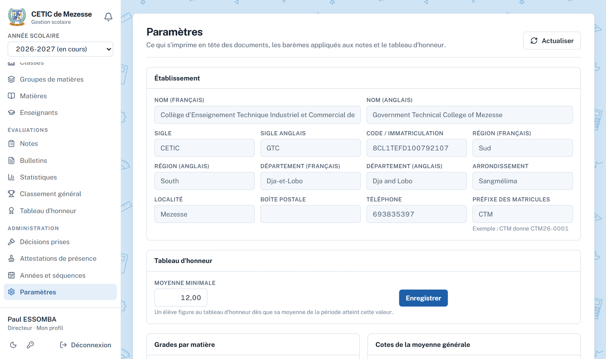
Figure 18 — Paramètres : en lecture seule, sauf le tableau d'honneur
9. L'application mobile et questions fréquentes
L'application Android offre les mêmes écrans, dont le journal des décisions, les attestations et le tableau d'honneur. Elle s'ouvre sans attendre le serveur, garde une copie des écrans déjà consultés pour les relire sans réseau, et affiche sa version en bas de l'écran de connexion et du menu.
Question
Réponse
Les documents disent « Le Directeur » alors que je suis une femme.
Choisissez la civilité « Mme » dans Mon profil (chapitre 2).
Je ne peux pas délivrer l'attestation.
La carrière du personnel est incomplète : il manque le matricule, le grade, la fonction ou la date de prise de service.
Un élève manque au tableau d'honneur.
Sa moyenne de la période est sous la moyenne minimale, ou des notes manquent encore ; vérifiez la période choisie.
Le bouton Désapprouver a disparu.
La décision a plus de 4 semaines (« Délai écoulé ») ou elle est déjà désapprouvée.
Ma désapprobation est refusée.
L'action ne peut plus être défaite ; le message en donne la raison (élèves inscrits, notes saisies…).
Un élève renvoyé apparaît encore sur un bulletin déjà imprimé.
Les bulletins générés après le renvoi ne le comprennent plus ; régénérez le PDF.
Une page est vide.
L'année n'est pas encore organisée par le Surveillant Général, ou les notes ne sont pas saisies.